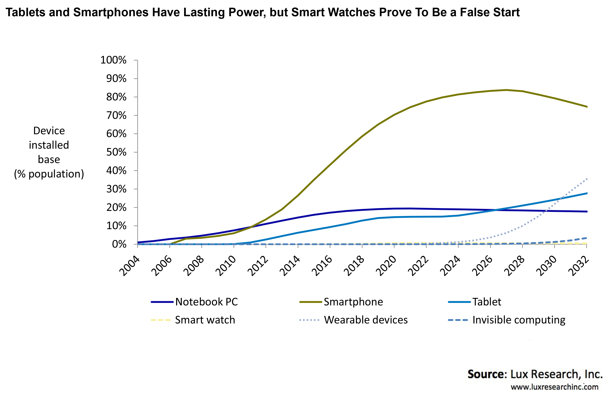

Qué es DevOps?
| Operaciones vs Desarrollo |
| Porque es conveniente? |
| DevOps vs SRE |
Devops: La aproximación SWE es la vencedora

¿Pero qué es Devops?
Devops es una suma de cultura, prácticas, herramientas, etc.
Propósito: Operaciones como un componente más del desarrollo ágil de las aplicaciones
No implica roles específicos; es “una forma de hacer”
¿Y por qué esa visión se impone?
- El código está más cerca del negocio; la aplicación/funcionalidad es lo que realmente se consume del catálogo IT; el código es un “first-class citizen”
- La oferta Cloud y las metodologías “dominantes” han permitido que los Ingenieros Software puedan ser autónomos
- Plena automatización (apoyada en código) de Sistemas / Arquitecturas / Tecnologías Cloud hacen más rápidas, seguras y mantenibles las soluciones IT
- Experiencia en desarrollo para mantener dichas bases pasa a ser fundamental
- Cualquier aproximación heredada del mundo “bipolar”, que asuma la existencia de “dos mundos” dentro de una corporación, o que introduzca operaciones “one time” (no importa que sea a través de la mejor de las herramientas Self-Service) deja de ser bienvenida
- La aproximación ya ha sido usada por líderes tecnológicos, con éxito
DevOps, rompiendo silos

DevOps culture vs role

DevOps culture vs role (2)

Algunos gráficos que dan para pensar

Servidores


Y ahora los que más me asustan de verdad… clientes



¿Actuar como “Google” es hype o necesidad?

Un nuevo rol: SRE (Site Reliability Engineer)
“what happens when a software engineer is tasked with what used to be called operations”, Ben Treynor
- Su foco es garantizar un nivel de fiabilidad y escalabilidad a las aplicaciones
- El rol ideal seria un software engineer con conocimientos de sistemas y redes
- Deben balancear su trabajo entre responder a emergencias y construir sistemas que minimizan los problemas
- A diferencia de Operaciones, los SREs pueden modificar el código de las aplicaciones
- También es su responsabilidad validar que una aplicación tiene la “calidad” suficiente para pasar a producción